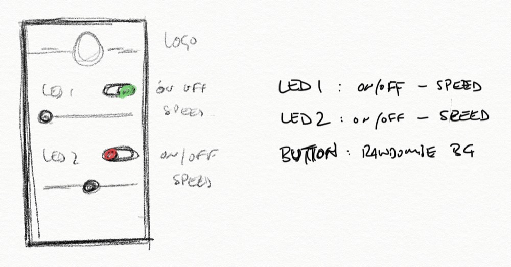

<!DOCTYPE html>
<html lang="en"></html>
<head>
  <meta charset="utf-8">
  <meta content="IE=edge" http-equiv="X-UA-Compatible">
  <meta content="width=device-width, initial-scale=1" name="viewport">
  <title> Rafael Rebolleda — Fab Academy 2020 Documentation</title>
  <!-- Google Fonts-->
  <link rel="stylesheet" href="https://fonts.googleapis.com/css?family=Catamaran&amp;display=swap">
  <link rel="stylesheet" href="../css/main.css">
</head>
<body> 
  <nav>
    <header>
      <ul>
        <li>Rafael Rebolleda</li>
        <li>ESNE (+ LEON)</li>
        <li>Madrid, Spain</li>
      </ul>
      <p class="bio">CX consultant and professor. Single, semi-remote Fab Acadeny student.</p>
    </header>
    <ol>
      <li><a class="red" href="../">About me</a></li>
      <li><a class="blue" href="../FP/">Final Project</a></li>
      <li><a class="blue" href="../DEV/">Project Development</a></li>
    </ol>
    <h1>Assignments</h1>
    <ol> 
      <li><a href="../W1/">Principles & Practices</a></li>
      <li><a href="../W2/">Computer Aided Design</a></li>
      <li><a href="../W3/">Computer Controlled Cutting</a></li>
      <li><a href="../W4/">Electronics Production</a></li>
      <li><a href="../W5/">3D Scan + Printing</a></li>
      <li><a href="../W6/">Electronics Design</a></li>
      <li><a href="../W7/">Computer Controlled Machining</a></li>
      <li><a href="../W8/">Embedded Programming</a></li>
      <li><a href="../W9/">Input Devices      </a></li>
      <li><a href="../W10/">Applications & Implications</a></li>
      <li><a href="../W11/">Output Devices</a></li>
      <li><a href="../W12/">Interface Programming</a></li>
      <li><a href="../W13/">Intellectual Property</a></li>
      <li><a href="../W15/">Molding & Casting</a></li>
      <li><a href="../W16/">Wildcard: Waterjet CCC</a></li>
      <li><a href="../W17/">Mechanical & Machine Design</a></li>
    </ol>
  </nav>
  <main>
    <h1>W12: Interface Programming</h1>
    <h2>Approach</h2>
    <p>For this assignment I thought I'd give <a href="https://processing.org/">Processing</a> a go, since it seems to have a similar structure and coding environment to Arduino.</p>
    <p>Doing a little bit of research, I learned that both can communicate over the serial port, so it seemed woth a try. I also found about <a href="http://www.sojamo.de/libraries/controlP5/">ControlP5</a>, an open source Processing library that deals with GUI elements, so I thought I would also give that a try.</p>
    <h2>The idea</h2>
    <p>Since <a href="../W6">I had built a custom version of the FabKit with an extra LED and button</a> for my <a href="../FP">Final Project</a>, I though I could use it to test bidireccional communication with a simple, proof of concept interface.</p>
    <p>The idea would be to control both LEDs in the PCB via the Processing GUI, and also change the GUI via the button on the PCB. Something like this:</p>
  </main>
  <footer>
    <hr>
    <p><a rel="license" href="http://creativecommons.org/licenses/by-nc/4.0/"></a><br />This work is licensed under a <a rel="license" href="http://creativecommons.org/licenses/by-nc/4.0/">Creative Commons Attribution-NonCommercial 4.0 International License</a>.</p>
  </footer>
</body>